Google Chrome を利用した「chrome リモートデスクトップ」で、質問時の操作支援を受ける方法を解説します。このハンズオンは「操作支援を受けたい人」向けとなります。 Web 会議システムを経由した場合における「デスクトップが全ての参加者に見られてしまう」という問題を解決します。
ただし、操作支援中における質問者とスタッフ間のコミュニケーション方法はフォーカス外としているため、Web 会議システムといったシステムを併用する事を前提としています。
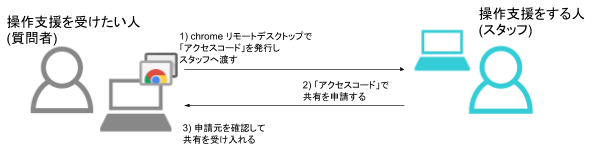
できるようになる事
- chrome リモートデスクトップのセットアップ
- chrome リモートデスクトップを利用した操作支援の受け入れ
このハンズオンでサポートしない事 (前提知識)
- Google Chrome のセットアップや使い方
- 操作支援をする人（スタッフ）側の操作
- 操作支援中における質問者とスタッフ間のコミュニケーションの方法
- Ubuntu や Raspbian 等の Linux OS でのセットアップ方法
このコンテンツの進め方
ページの内容を読み、また作業を行ったら右下の［Next］を押して次のステップへ進みます。また、［Back］を使って戻ったり、左のナビゲーションメニューでもページの移動が可能です。
左上の［×］を押してコンテンツを終了することができます。また、ページを開きなおすことで再開できます。ページのアドレスはブラウザの［履歴］メニューを利用してください。
macOS の方は別の章をご覧ください。
必要なものの確認
chrome リモートデスクトップを利用するためには以下のものが必要ですので確認してください。
- Google Chrome 最新版
https://remotedesktop.google.com/ を Google Chrome で開きます。
［リモートサポート］をクリックします。
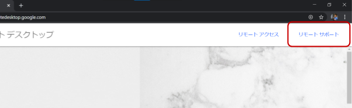
"サポートを受ける" のダウンロードボタン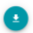をクリックします。
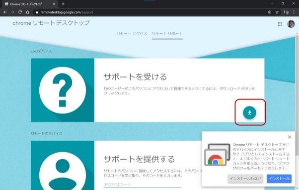
新たに開いたウィンドウ "chrome ウェブストア" で［Chromeに追加］をクリックし、その後の "「Chrome Remote Desktop」を追加しますか？" では［拡張機能を追加］をクリックします。
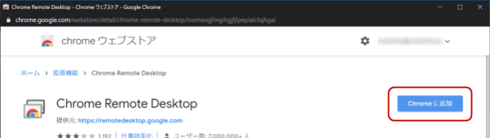
元のウィンドウで "インストールの準備完了" と表示されたら［同意してインストール］をクリックします。
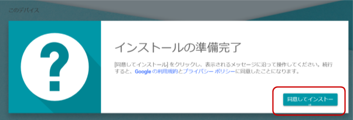
"ダウンロードしたファイルを開く" では［はい］をクリックします。その後指示される内容に従ってインストールを進めてください。
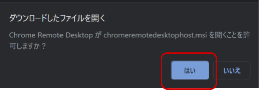
"まもなく完了" が表示されたら［OK］をクリックします。
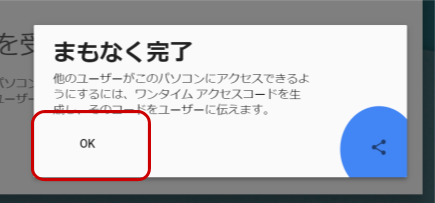
元のウィンドウ (もしくは https://remotedesktop.google.com/support/ を開きなおして) "サポートを受ける" ［コードを生成］が表示されたらセットアップ完了です。

Windows の方は別の章をご覧ください。
必要なものの確認
chrome リモートデスクトップを利用するためには以下のものが必要ですので確認してください。
- Google Chrome 最新版
https://remotedesktop.google.com/ を Google Chrome で開きます。
［リモートサポート］をクリックします。
"サポートを受ける" のダウンロードボタンをクリックします。
新たに開いたウィンドウ "chrome ウェブストア" で［Chromeに追加］をクリックし、その後の "「Chrome Remote Desktop」を追加しますか？" では［拡張機能を追加］をクリックします。
"まもなく完了" が表示されたら［OK］をクリックします。
元のウィンドウ (もしくは https://remotedesktop.google.com/support/ を開きなおして) "サポートを受ける" ［コードを生成］が表示されたらセットアップ完了です。
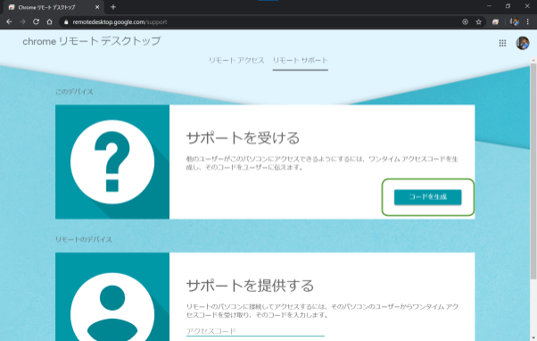
全体の流れ
アクセスコードを発行して操作支援する人（スタッフ）に渡す
https://remotedesktop.google.com/support/ を開き［コードを生成］をクリックします。
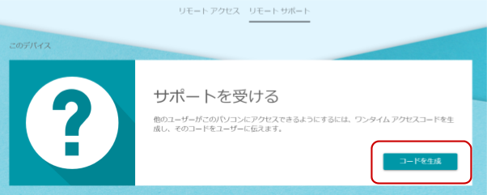
数秒経過すると12桁の数字が表示されます。これがアクセスコードです。この数字をメモしましょう。
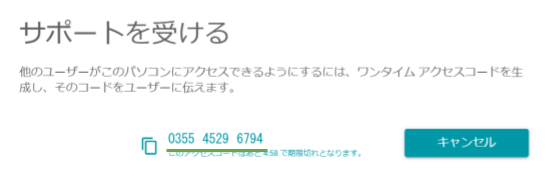
アクセスコードを「なんらかの方法」で操作支援する人（スタッフ）に渡します。
方法はスタッフからの指示、もしくはスタッフに確認してください。
共有を受け入れる
しばらくすると "～～ にパソコンの閲覧と制御を許可しますか？" というダイアログが表示されます。この時 ～～ に表示されているメールアドレスがスタッフのものであるかを確認してから［共有］をクリックします。
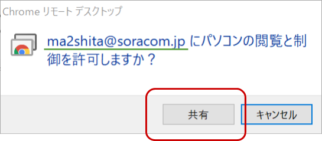
共有を終了する
操作支援が不要になったら共有を終了します。終了の方法は2つあります。
画面下の［共有を停止］をクリックする方法
スタッフ側でも確実に「共有が停止された」事がわかるため、この方法が望ましいです。
Google Chrome を終了する方法
ブラウザを閉じれば共有は強制的に終了します。
しかしながらスタッフ側では画面が残ってしまい、通信不良による一時的な問題なのか状況がわかりづらくなってしまうため、通常は［共有を停止］する方法を行うようにしてください。
再度、操作支援を受けるには
アクセスコードの発行からやり直してください。
お疲れさまでした、これで本コンテンツは終了です。
リモートで支援を受けられる体制が整いましたので、ハンズオンに進んでください。
本ドキュメントは閉じてしまって構いません。
アンインストール
Windows
- 設定の「アプリと機能」で Google Remote Desktop Host を削除します。
- Google Chrome 拡張機能の Chrome Remote Desktop を削除します。
macOS
- Google Chrome 拡張機能の Chrome Remote Desktop を削除します。
利用可能なネットワーク環境
トラブルシュートに役立つ情報（未確認ですが）
操作支援をする人（スタッフ）の操作
https://remotedesktop.google.com/support/ を開いて "サポートを提供する" にアクセスコードを入力して［接続］で接続できます。
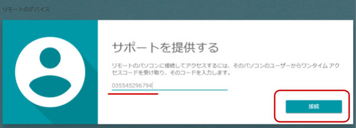